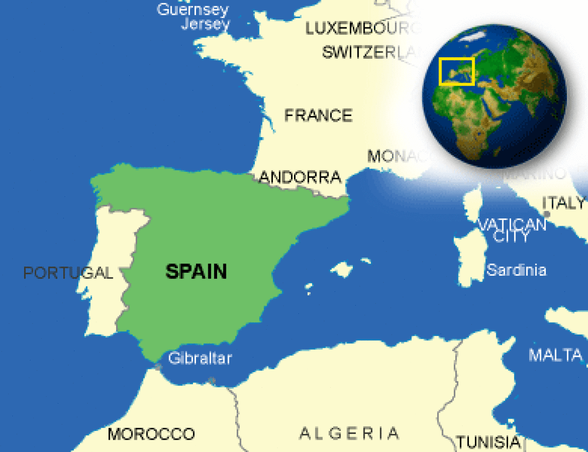

The Wayback Machine - https://web.archive.org/web/20231130205007/https://www.countryreports.org/country/spain.htm

Where is Spain located?
What countries border Spain?

Spain Weather
What is the current weather in Spain?
Spain Facts and Culture
What is Spain famous for?
- Cultural Attributes: The Spanish are generally friendly, helpful, and individualistic. They enjoy conversation and giving advice. The Spanish often consider it their... More
- Family: The average Spanish family today has 0.7 children., the Spanish birth rate is one of the lowest in the European... More
- Personal Apperance: The Spanish are concerned with their public appearance, even when just running errands. A person's social standing is often... More
- Recreation: Football (soccer) is the national sport in Spain. Nearly all children learn how to play the sport, and watching important... More
- Diet: Typical Spanish food includes fresh vegetables, meat, eggs, chicken, and fish. Most fried foods are cooked in olive oil. Breakfast... More
- Food and Recipes: At a formal dinner, the host or hostess indicates seating arrangements for guests. For example, ladies, older people, and guests... More
- Visiting: In former times, there used to be some protocol rules in Spain which are not longer in application: e.g. the... More
- Dating: Dating often begins around age fourteen with group activities. Many young men and women begin dating at about age... More
Spain Facts
What is the capital of Spain?
| Capital | Madrid |
| Government Type | parliamentary constitutional monarchy |
| Currency | Euro (EUR) |
| Total Area |
195,123 Square Miles 505,370 Square Kilometers |
| Location | Southwestern Europe, bordering the Mediterranean Sea, North Atlantic Ocean, Bay of Biscay, and Pyrenees Mountains; southwest of France |
| Language |
Castilian Spanish (official) 74%, Catalan 17%, Galician 7%, and Basque 2% note: Catalan is official in Catalonia, the Balearic Islands, and the Valencian Community (where it is known as Valencian); in the northwest corner of Catalonia (Vall d'Aran), Aranese is official along with Catalan; Galician is official in Galicia; Basque is official in the Basque Country |
| GDP - real growth rate | 3.1% |
| GDP - per capita (PPP) | $35,200.00 (USD) |
Spain Demographics
What is the population of Spain?
| Ethnic Groups | composite of Mediterranean and Nordic types |
| Nationality Adjective | Spanish |
| Nationality Noun | Spaniard(s) |
| Population | 50,015,792 |
| Population Growth Rate | 0.73% |
| Population in Major Urban Areas | MADRID (capital) 6.574 million; Barcelona 5.57 million; Valencia 797,000 |
| Predominant Language |
Castilian Spanish (official) 74%, Catalan 17%, Galician 7%, and Basque 2% note: Catalan is official in Catalonia, the Balearic Islands, and the Valencian Community (where it is known as Valencian); in the northwest corner of Catalonia (Vall d'Aran), Aranese is official along with Catalan; Galician is official in Galicia; Basque is official in the Basque Country |
| Urban Population | 77.4% |
Spain Government
What type of government does Spain have?
- Executive Branch: chief of state: King FELIPE VI (since 19 June 2014); Heir Apparent Princess LEONOR, Princess of Asturias (daughter of the... More
- Suffrage: 18 years of age; universal More
- Citizenship: citizenship by birth: no citizenship by descent only: at least one parent must be a citizen of Spain dual citizenship recognized: only... More
- National Holiday: National Day, 12 October (1492); year when Columbus first set foot in the Americas More
- Constitution: history: previous 1812; latest approved by the General Courts 31 October 1978, passed by referendum 6 December 1978, signed by... More
- Independence: 1492; the Iberian peninsula was characterized by a variety of independent kingdoms prior to the Muslim occupation that began in... More
Spain Video
YouTube: Rick Steves' Europe Rick Steves' Andalucía: The Best of Southern Spain
Spain Geography
What environmental issues does Spain have?
- Overview: Spain is comprised of portions of the Iberian mainland, the Balearic Islands and the Canary Islands, and the enclaves of... More
- Climate: Madrid's climate is predominantly dry, sunny, and agreeable. Because of its elevation (about 2,000 feet above sea level) and its... More
- Border Countries: Andorra 63.7 km, France 623 km, Gibraltar 1.2 km, Portugal 1,214 km, Morocco (Ceuta) 6.3 km, Morocco (Melilla) 9.6 km More
- Environment - Current Issues: pollution of the Mediterranean Sea from raw sewage and effluents from the offshore production of oil and gas; water quality... More
- Environment - International Agreements: party to: Air Pollution, Air Pollution-Nitrogen Oxides, Air Pollution-Sulfur 94, Air Pollution-Volatile Organic Compounds, Antarctic-Environmental Protocol, Antarctic-Marine Living Resources, Antarctic... More
- Terrain: large, flat to dissected plateau surrounded by rugged hills; Pyrenees Mountains in north More
Spain Economy
How big is the Spain economy?
- Economic Overview: GDP and Growth: Spain is one of the largest economies in Europe and the world. Before the COVID-19 pandemic, Spain... More
- Industries: textiles and apparel (including footwear), food and beverages, metals and metal manufactures, chemicals, shipbuilding, automobiles, machine tools, tourism, clay and... More
- Currency Name and Code: Euro (EUR) More
- Export Partners: France 17.8%, Germany 10.6%, Portugal 8.3%, Italy 8.3%, UK 6.7% More
- Import Partners: Germany 13%, France 11.8%, Italy 6.7%, China 5.8%, Netherlands 5%, UK 4.5% More
Spain News and Current Events
What current events are happening in Spain?
Source: Google News
Spain Travel Information
What makes Spain a unique country to travel to?
Country Description
Spain and Andorra are both advanced, stable democracies with modern economies. Spain is a member of the North Atlantic Treaty Organization (NATO) and the European Union.
Crime
Andorra has a low rate of crime. While most of Spain has a moderate rate of crime and most of the estimated one million U.S. citizen tourists have trouble-free visits to Spain each year, street crimes against tourists occur in the principal tourist areas. Madrid and Barcelona, in particular, report incidents of pick-pocketing, mugging, and occasional violent attacks, some of which require the victim to seek medical attention. Criminals tend to frequent tourist areas and major attractions such as museums, monuments, restaurants, outdoor cafes, Internet cafes, hotel lobbies, beach resorts, city buses, subways, trains, train stations, airports, and ATMs.In Madrid, incidents have been reported in all major tourist areas, including the area near the Prado Museum, near Atocha train station, in Retiro Park, in areas of old Madrid including near the Royal Palace, and in Plaza Mayor. There have been a number of passport and bag thefts reported at Barajas Airport, local hotels, as well as in El Rastro (Madrid’s flea market) and in the Metro.
In Barcelona, the largest number of incidents reported also occurred in major tourist areas--on Las Ramblas, El Prat Airport, Sants train station, inside Metro stations, in the Sagrada Familia Area, in the Gothic Quarter, in Park Güell, in Plaza Real, and along Barcelona’s beaches. There have been a number of thefts reported at the Port Olimpic Area and nearby beaches.
Travelers should remain alert to their personal security and exercise caution. We suggest that travelers carry limited cash, only one credit card, and a copy of their passport; leaving extra cash, extra credit cards, passports and personal documents in a safe location.
Be especially careful in crowds. Avoid placing passports, cash or other valuables in the outer pockets of backpacks or purses. Pickpockets often use the cover of a crowd to rob unsuspecting tourists and visitors. Do not leave belongings unattended in public areas. Do not put purses on the floor or on the backs of chairs at restaurants. Keep valuable belongings within sight and within easy reach at all times in public areas to reduce the risk of theft.
Thieves often work in teams of two or more people using tactics limited only by their own creativity and imagination. In many cases, one person distracts a victim while the accomplices perform the robbery. For example, someone might wave a map in your face and ask for directions, ”inadvertently” spill something on you, or help you clean up bird droppings thrown on you by a third unseen accomplice. While your attention is diverted, an accomplice makes off with your valuables. Thieves may drop coins or keys at your feet to distract you and try to take your belongings while you are trying to help. Physical assaults rarely happen. In the past, such attacks were initiated from behind, with the victim being grabbed around the neck and choked by one assailant while others rifle through or grab the belongings.
A group of assailants may surround the victim in a crowded popular tourist area or on public transportation, and only after the group has departed does the person discover he/she has been robbed. Purse snatchers may grab purses or wallets and run away, or immediately pass the stolen item to an accomplice. A passenger on a passing motorcycle sometimes robs pedestrians. There have been reports of thieves posing as plainclothes police officers, beckoning to pedestrians from cars and sometimes confronting them on the street asking for documents, or to inspect their cash for counterfeit bills, which they ultimately confiscate as “evidence.” The U.S. Embassy in Madrid has received reports of cars on limited access motorways being pulled over by supposed unmarked police cars. The Spanish police do not operate in this fashion. We encourage U.S. citizens to ask for a uniformed law enforcement officer if approached.
Theft from vehicles is also common. “Good Samaritan" scams are unfortunately common, where a passing car or helpful stranger will attempt to divert the driver’s attention by indicating there is a flat tire or mechanical problem. When the driver stops to check the vehicle, the “Good Samaritan” will appear to help the driver and passengers while the accomplice steals from the unlocked car. Drivers should be cautious about accepting help from anyone other than a uniformed Spanish police officer or Civil Guard. Items high in value like luggage, cameras, laptop computers, or briefcases are often stolen from cars. We recommend that travelers not leave baggage in open view inside parked cars, and keep doors locked, windows rolled up, and valuables out of sight when driving.
While the incidence of sexual assault is statistically very low, attacks do occur. We recommend that U.S. citizens remain aware of their surroundings at all times, and travel with a companion if possible, especially at night. Spanish authorities warn of the availability of so-called "date-rape" drugs and other drugs, including GBH and liquid ecstasy. U.S. citizens should not lower their personal security awareness because they are on vacation. Be cautious in bars and clubs where alcohol is served, never leave your drink unattended and never accept an open drink from a stranger. Incidents have been reported of people falling victim to serious crime after having drugs slipped into their drinks.
A number of U.S. citizens have been victims of various scams in Spain. One scheme involves a U.S. citizen receiving an email or telephone call requesting money to assist a relative or acquaintance who has allegedly been arrested, detained, robbed, or injured in Spain. Often, it starts with a call impersonating a grandchild supposedly arrested in Spain, asking the grandparents not to inform the parents. If you receive such an email, we recommend that you not send money. Other scams include lottery or advance-fee scams in which a person is lured to Spain to finalize a financial transaction. Often the victims are initially contacted via Internet or fax and informed they have won the Spanish Lottery (El Gordo), inherited money from a distant relative, or are needed to assist in a major financial transaction from one country to another.
Don’t buy counterfeit and pirated goods, even if they are widely available. Not only are the bootlegs illegal to bring back into the United States, if you purchase them you are also breaking local law.
Criminal Penalties
While you are traveling in Spain and Andorra, you are subject to its laws even if you are a U.S. citizen. Foreign laws and legal systems can be vastly different from our own and criminal penalties will vary from country to country. In Spain, driving under the influence could land you immediately in jail. There are also some things that might be legal in the country you visit, but still illegal in the United States. You can be prosecuted under U.S. law if you buy pirated goods. Engaging in sexual conduct with children or using or disseminating child pornography in a foreign country is a crime prosecutable in the United States. If you break local laws in Spain and Andorra, your U.S. passport or citizenship won’t help you avoid arrest or prosecution. It’s very important to know what’s legal and what’s not wherever you go.Persons violating the laws of Spain and Andorra, even unknowingly, may be expelled, arrested, or imprisoned. Penalties for possessing, using, or trafficking in illegal drugs in Spain and Andorra are severe, and convicted offenders can expect long jail sentences and heavy fines. The cities of Madrid and Barcelona and the Balearic Islands regional government have banned the consumption of alcohol in the street, other than in registered street cafes and bars. Visitors to Madrid, Barcelona, Mallorca, Ibiza, and Menorca should be aware that failure to respect this law might result in the imposition of fines. Throughout Spain and Andorra, driving under the influence could land you immediately in jail.
Spain takes illegal immigration seriously and police may stop people to ask for identification and proof of legal status. We recommend that you carry a copy of your U.S. passport at all times.
While some countries will automatically notify the nearest U.S. embassy or consulate if a U.S. citizen is detained or arrested in a foreign country, that might not always be the case here. To ensure that the United States Government is aware of your circumstances, request that the police and prison officials notify the nearest U.S. embassy or consulate as soon as you are arrested or detained overseas.
Medical Facilities and Health Information
Good medical care is available in both Spain and Andorra. Regulations regarding medications may vary from those in the United States. Spanish regulations do not permit the international shipment of medication, so please do not ship medication from the United States to Spain. U.S. citizens who plan a lengthy trip to Spain should bring their medication or obtain a prescription for that medication from a Spanish physician.
Safety and Security
Spain and Andorra share with the rest of the world an increased threat of international terrorist incidents. Like other countries in the Schengen area, Spain's open borders with its Western European neighbors allow the possibility of terrorist groups entering and exiting the country with anonymity. Spain’s proximity to North Africa makes it vulnerable to attack from al-Qa’ida terrorists in the Maghreb region. We remind U.S. citizens to remain vigilant with regard to their personal security and to exercise caution at all times.In March 2004, Islamist extremists bombed four commuter trains entering Madrid, causing 191 deaths and over 1,400 injuries. Spanish authorities tried the suspected terrorists and their co-conspirators in February 2007 and they were convicted in October 2007.
In 2011, the Basque Fatherland and Liberty (ETA) terrorist organization publicly announced a “definitive cessation of armed activity.” While recent arrests have seriously weakened the organization, and despite the announcement, ETA remains a threat and has not disarmed or disbanded. ETA has historically avoided targeting foreigners, instead directing their attacks against the police, military, local politicians, and Spanish government targets as well as towards disrupting transportation and daily life. However, foreigners have been killed or injured collaterally in ETA attacks, and the risk of being in the wrong place at the wrong time in event of an ETA action is a concern for foreign visitors and tourists. Two Ecuadorian nationals were killed in a bombing at the Barajas Airport in Madrid in 2006, and 17 students were injured, including one U.S. citizen, in a bombing at the University of Navarre in 2008. U.S. citizen tourists traveling to Spain should remain vigilant, exercise caution, monitor local developments, and avoid demonstrations and other potentially violent situations. Bombings outside the Basque Country in Burgos and Palma de Mallorca in July 2009 underscore the importance of being vigilant. Though extortion threats have recently ceased in the Basque region, bombs have been used as part of criminal extortion of businesses in the past.
Prior police approval is required for all public demonstrations in Spain, and police are present to ensure adequate security for participants and passers-by. Nonetheless, spontaneous demonstrations do take place in Spain from time to time in response to world events or local developments. Even demonstrations that are meant to be peaceful can become unpredictable and even violent; you should avoid them if at all possible. Be alert and aware of your surroundings, and pay attention to what the local news media have to say. In general, larger public demonstrations are announced on the Demonstrations page on the U.S. Embassy Madrid website.
Traffic Safety and Road Conditions
While in Spain and Andorra, you may encounter road conditions that differ significantly from those in the United States.Traffic in Madrid and Barcelona is faster paced than in U.S. cities and can be unnerving because of unfamiliar signs or motorbikes weaving between traffic lanes. Drivers should always obey the traffic light located at their stop line, as there are separate traffic lights for each side of the intersection. For example, the traffic light at the stop line of an intersection may be red, but across the intersection the light may be green, allowing for right/left hand turns only. An amber flashing light indicates that drivers must yield to pedestrians. Drivers should be alert when driving at night in urban areas because of the possibility of encountering drivers or pedestrians under the influence of alcohol. Night driving in isolated rural areas can be dangerous because of farm animals and poorly marked roads. Rural traffic is generally heavier in July and August as well as during the Christmas and Easter seasons.
Traffic regulations in effect in Spain include the prohibition on the use of a mobile phone without a hands-free device while driving a car. There is a fine of 300 euros for violation of this regulation and loss of driving privileges. In addition, all drivers and passengers are required to carry a reflective vest and put it on if they need to stop on the roadside. A reflective triangle warning sign for a vehicle stopped on the side of the road is also mandatory. Liability insurance, at a minimum, is also required to legally operate any car or motorcycle. Those renting vehicles are encouraged to check with the rental company about traffic regulations and safety equipment. U.S. citizen tourists must obtain International Driving Permits prior to their arrival if they plan to drive in Spain. Those Permits are only valid for one year. You are not allowed to drive on your U.S. license. While rental car companies may rent a vehicle to you without the International Driving Permit, this is illegal and, if pulled over for a traffic violation, your rental car may be detained and towed to the nearest impound lot. Pedestrians should use designated crossing areas when crossing streets and obey traffic lights.
One of the facets of Spanish traffic laws that many U.S. citizens find troublesome is traffic stops by the Spanish National Police or the Guardia Civil. Unlike in the United States, where drivers receive traffic tickets and then pay the court via mail or in person, Spanish police authorities may levy fines on the spot and issue a receipt for the payment. This is done to ensure the traffic fine is paid by foreigners who rarely come back to Spain to pay the fine.
Public transportation in large Spanish cities is generally excellent. All major cities have metered taxis, in which extra charges must be posted in the vehicle. We advise travelers to use only clearly identified cabs and to ensure that taxi drivers always switch on the meter. A green light on the roof indicates that the taxi is available. If you have a problem or suspect you are being over charged, ask for an official receipt. The license number for the taxi should be located in a metal plaque by the passenger window. This number identifies a specific taxi and can prove useful in the event of forgotten property or if you decide to file a complaint. Rail service is comfortable and reliable, but varies in quality and speed. Intercity buses are usually comfortable and inexpensive.
World Regions
All Countries
Afghanistan
Akrotiri
Albania
Algeria
American Samoa
Andorra
Angola
Anguilla
Antarctica
Antigua and Barbuda
Argentina
Armenia
Aruba
Australia
Austria
Azerbaijan
Bahamas
Bahrain
Bangladesh
Barbados
Belarus
Belgium
Belize
Benin
Bermuda
Bhutan
Bolivia
Bosnia and Herzegovina
Botswana
Brazil
British Indian Ocean Territory
British Virgin Islands
Brunei
Bulgaria
Burkina Faso
Burma
Burundi
Cabo Verde
Cambodia
Cameroon
Canada
Cayman Islands
Central African Republic
Chad
Chile
China
Christmas Island
Clipperton Island
Cocos (Keeling) Islands
Colombia
Comoros
Congo, Democratic Republic of the
Congo, Republic of the
Cook Islands
Coral Sea Islands
Costa Rica
Cote d’Ivoire
Croatia
Cuba
Curacao
Cyprus
Czech Republic
Denmark
Dhekelia
Djibouti
Dominica
Dominican Republic
Ecuador
Egypt
El Salvador
Equatorial Guinea
Eritrea
Estonia
Eswatini
Ethiopia
Falkland Islands
Faroe Islands
Fiji
Finland
France
French Guiana
French Polynesia
Gabon
Gambia, The
Gaza Strip
Georgia
Germany
Ghana
Gibraltar
Greece
Greenland
Grenada
Guadeloupe
Guam
Guatemala
Guernsey
Guinea
Guinea-Bissau
Guyana
Haiti
Holy See
Honduras
Hong Kong
Hungary
Iceland
India
Indonesia
Iran
Iraq
Ireland
Isle of Man
Israel
Italy
Jamaica
Jan Mayen
Japan
Jersey
Jordan
Kazakhstan
Kenya
Kiribati
Korea, North
Korea, South
Kosovo
Kuwait
Kyrgyzstan
Laos
Latvia
Lebanon
Lesotho
Liberia
Libya
Liechtenstein
Lithuania
Luxembourg
Macau
Madagascar
Malawi
Malaysia
Maldives
Mali
Malta
Marshall Islands
Martinique
Mauritania
Mauritius
Mayotte
Mexico
Micronesia
Moldova
Monaco
Mongolia
Montenegro
Montserrat
Morocco
Mozambique
Namibia
Nauru
Nepal
Netherlands
New Caledonia
New Zealand
Nicaragua
Niger
Nigeria
Niue
Norfolk Island
North Macedonia
Northern Mariana Islands
Norway
Oman
Pakistan
Palau
Panama
Papua New Guinea
Paraguay
Peru
Philippines
Pitcairn Islands
Poland
Portugal
Puerto Rico
Qatar
Reunion
Romania
Russia
Rwanda
Saint Helena, Ascension, and Tristan da Cunha
Saint Kitts and Nevis
Saint Lucia
Saint Pierre and Miquelon
Saint Vincent and the Grenadines
Samoa
San Marino
Sao Tome and Principe
Saudi Arabia
Senegal
Serbia
Seychelles
Sierra Leone
Singapore
Slovakia
Slovenia
Solomon Islands
Somalia
South Africa
Spain
Sri Lanka
Sudan
Sudan, South
Suriname
Svalbard
Sweden
Switzerland
Syria
Taiwan
Tajikistan
Tanzania
Thailand
Timor-Leste
Togo
Tokelau
Tonga
Trinidad and Tobago
Tunisia
Turkey
Turkmenistan
Turks and Caicos Islands
Tuvalu
Uganda
Ukraine
United Arab Emirates
United Kingdom
United States (US)
Uruguay
Uzbekistan
Vanuatu
Venezuela
Vietnam
Virgin Islands
Wake Island
Wallis and Futuna
West Bank
Western Sahara
World
Yemen
Zambia
Zimbabwe